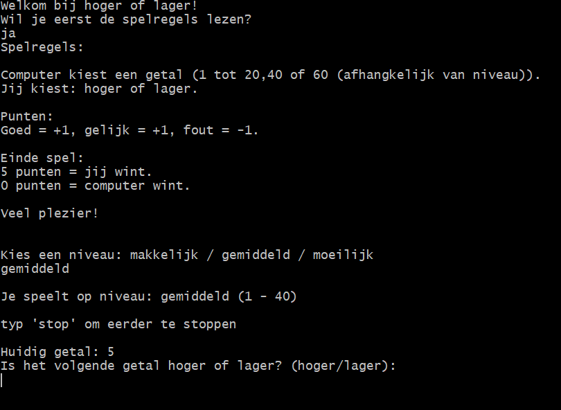

De speler probeert te voorspellen of het volgende getal hoger of lager is dan het huidige getal.

1. Computer genereert een random getal tussen de 1 en de 30.
2. De computer genereert een nieuw getal.
3. De speler kiest: hoger of lager
4. De computer genereert een nieuw getal.
5. Als de speler goed heeft geraden krijgt de speler +1 punt
6. Is het volgende getal even groot als het huidige getal dan krijgt de speler ook +1 punt.
7. Heeft de speler het fout dan krijgt de speler een punt in mindering.
Input regels:
Het is alleen toegestaan of hoger of lager te typen bij het maken van uw keuze.
Elke ander
invoer
zal ervoor zorgen dat er gevraagd wordt om opnieuw hoger of lager te typen.
Het is ook
mogelijk
om
eerder te stoppen met het spel namelijk door stop te typen.